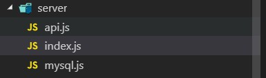
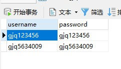
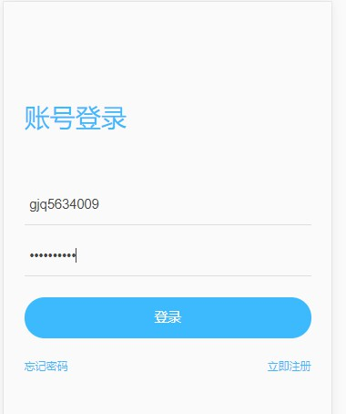
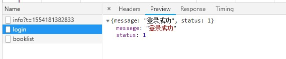

node express + mysql实现简单服务端
前端新人想写服务端不想学PHP等后端语言怎么办，那就用js写后台吧！
这也是我这个前端新人的学习成果分享，如有那些地方不对，请给我指出。
1.准备工作
node：官网下载，然后配置环境变量，在cmd中输入node -v检查是否配置成功。
npm：集成在node里了，npm -v检查。
MySQL：官网下载安装，配置请问度娘。
2.构建服务端
首先先在项目文件夹里新建一个server的新文件夹，新建一个index.js服务端入口文件，一个mysql.js配置文件，一个api.js接口文件。

index.js
const userApi = require('./api')
const bodyParser = require('body-parser')
const express = require('express')
const app = express()
// 中间件
app.use(bodyParser.json())
app.use(bodyParser.urlencoded({ extended: false }))
app.use('/sqlapi', userApi)
// 监听端口
app.listen(3000)
console.log('success listen at port:3000')
mysql.js
var mysql = require('mysql')
var connection = mysql.createConnection({
host: 'localhost',//数据库地址
user: 'root', //连接数据库的用户名
password: '',//连接数据库的密码
database: ''//数据库名
})
module.exports = connection
api.js
var mysql = require('./mysql')
var express = require('express')
var router = express.Router()
mysql.connect()
router.post('/login', (req, res) => {
var params = req.body
mysql.query("SELECT * FROM `user` WHERE `username` = '" + params.username + "' AND `password` = '" + params.password + "'", function (err, result) {
if (err) {
console.log(err)
}
if (result) {
if (result.length > 0) {
res.json({ message: '登录成功', status: 1 })
} else {
res.json({ message: '用户名或密码错误', status: 0 })
}
res.end('is over')
}
})
})
这样服务端就完成了，然后进入server文件夹，cmd运行命令
node index
启动服务端
3.前端访问
服务端构建完成后就可以在前台用ajax访问了，这里我用我正在写的个人项目做演示，我个人项目用的是vue-cli3，请求用的是axios，并且封装了拦截器，所以可能有些不同，只需要按照常规的post请求即可。
** 注意，因为服务端和前端端口不一致，所以存在跨域问题，需要进行跨域 **
这是我前端api封装的代码，不含拦截器
import request from '@/utils/request'
/**
* 登录
*/
export function login (data) {
return request({
url: '/sqlapi/login',
method: 'post',
data: {
username: data.username,
password: data.password
}
})
}
调用页面
login () {
var _this = this
if (this.disabled) return
this.disabled = true
login({ username: this.username, password: this.password }).then(function (data) {
_this.disabled = false
if (data.data.status) {
Toast(data.data.message)
_this.$store.dispatch('SetUserInfo', { username: _this.username, login: true })
} else {
Toast(data.data.message)
}
})
}
跨域配置：
跨域我是在前台进行配置的，因为还用到其它接口，也可以在服务端进行配置噢。
proxy: {
'/sqlapi': {
target: 'http://localhost:3000/sqlapi',
ws: true,
changeOrigin: true,
pathRewrite: {
'^/sqlapi': ''
}
}
}
mysql 建表
首先先建一个表，比如账户信息，用户名作为主键，随便写两个字段测试一下

登录界面填好账号密码后，点击登录请求

查看返回数据，请求成功

这样就实现了node express + mysql的服务端，是不是很简单，觉得有用的话就给我评个分吧！
完整项目地址：github